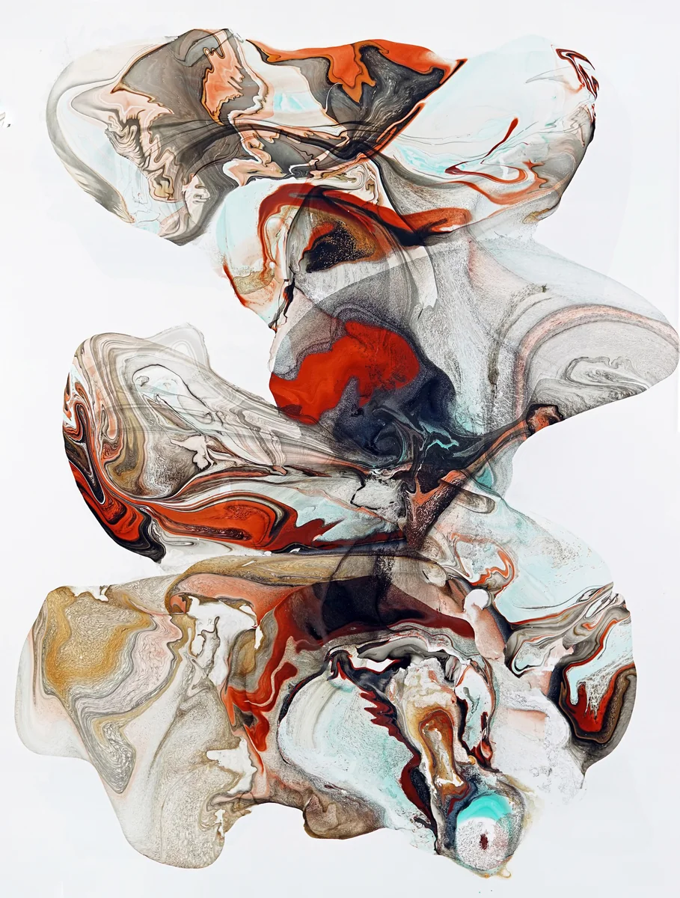
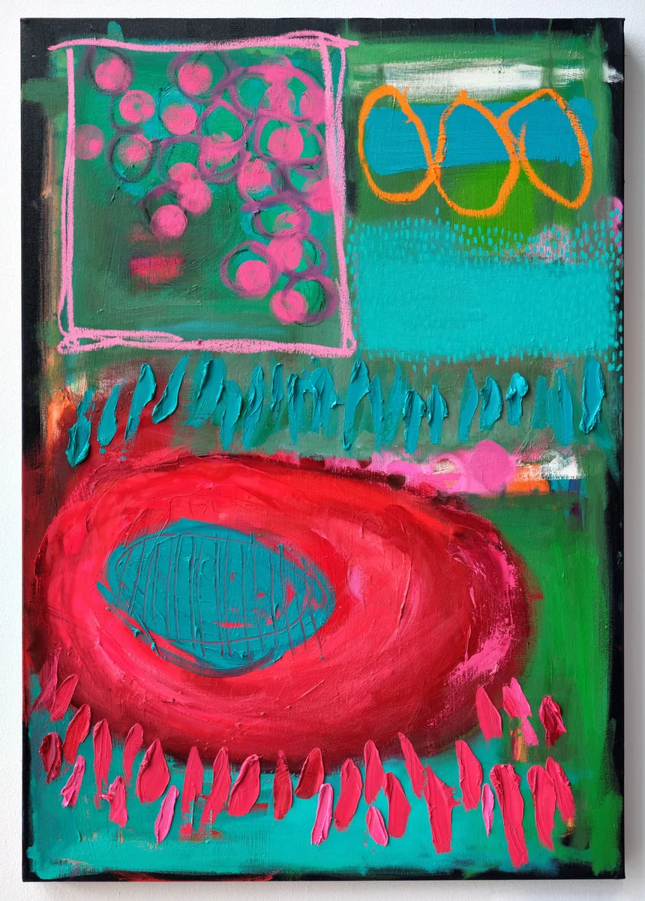
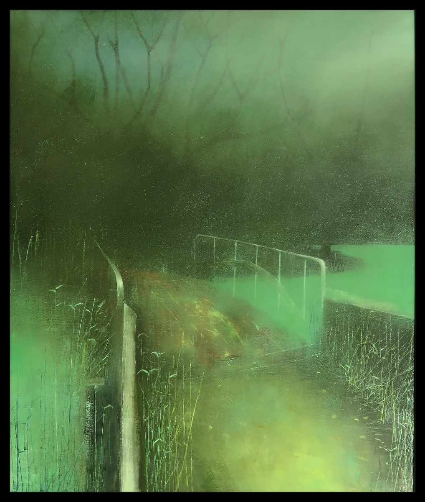

Contemporary.
Abstraction, expression and experimentation.
Blowout Series II #2, 2021 Leah Hewson
Painting, Prints, installation, murals, sculpture.
Hewson has a First-Class BA(Hons) degree in Fine Art from IADT, Dublin Ireland.
The Universe is in me, 2025 Rasher Mark Kavanagh
Painter · Wicklow
Rasher, is a self-taught artist based in Wicklow. His emotionally resonating oil paintings have been exhibited and collected from Dublin London , San Francisco & Los Angeles exhibited at Chateau Marmont in 2006 .
Non-Serviam, 2018 PIGSY
Mixed Media Painting · Dublin
PIGSY is the artistic identity of Dublin-born Irish artist Ciarán McCoy. His practice centres on painting, exploring the psychological terrain of language, memory, identity and belonging through bold, instinctive mark-making.


Explore the Gallery

Walk of life, 2025 Fintan Whelan
Painter
Fintan Whelan (b. 1967, Dublin, Ireland) is an acclaimed contemporary Irish abstract painter exploring the interplay of colour, light, movement and organic form. He studied fine art at Dún Laoghaire School of Art and Dublin Institute of Technology, Mountjoy Square.

Uisce Salach I, 2024 · Photo: Simon Mills Anna Marie Savage
Painter · Louth
Anna Marie Savage is a visual artist based in Omeath, Co. Louth, whose practice centres on abstract oil painting informed by environmental research, fieldwork and microscopy. Her work explores the relationship between human activity, environmental degradation and the often unseen ecological systems within our waterways.

The Creation Of Adam, 2026 Paul Kerr
Painter · Donegal
I was born in 1965 in Dungannon, Co Tyrone. My passion for art began in my early teens and became an obsession by the time i was accepted for art college in 1983.

I love you, 2026 Nick Munier
Painter
NICK MUNIER Nick Munier | Contemporary Artist Nick Munier is a contemporary artist whose creative journey has taken him from the high-pressure world of professional kitchens and television to the freedom and experimentation of abstract art.

Humming Light, 2026 Nessa McCormack
Painter · Wicklow
I am an abstract painter and teacher living in County Wicklow, Ireland. My work is a celebration of the energy of life. The vitality, movement, colour, rhythm and interconnectedness that exist within the natural world and within human experience.

Navigating The Labyrinth No. 1, 2015 Clare O'Connor
Abstract Painter, Printmaker
Clare O'Connor (b. 1977, Dublin, Ireland) is an award winning artist and designer based in Co. Meath with a BDES in Design Communications & a BA in Visual Arts Practice from IADT, Dublin graduating in 2001 and 2009.

“What we Carry”, 2026 Lena Fawaz
Painter · Dublin
Lena is an emerging abstract artist based in Dublin. As a recently divorced and busy mother of two she cherishes her art practice as a healing opportunity to reflect on life where she lets her inner child take the stage.

'Disco Ball', 2024 Sarah Fitzgibbon
Fine art printmaker specialising in screen printing.
Sarah Fitzgibbon is an Irish visual artist and printmaker based in Dublin. She graduated from Limerick School of Art & Design with a BA in Fine Art Printmaking. Her practice is rooted in screen printing.

Coastal Series 8, 2026 Carolyn Walsh
PAINT, PRINT, PHOTOGRAPHY · Dublin
Carolyn Walsh is a Dublin-based contemporary artist originally from Cahirciveen, Co. Kerry. Working across painting, printmaking, photography and collage, her practice explores places, memories and a sense of belonging.

The Crossing, 2025 Daniel Chester
Painter · Leitrim
Daniel Chester is a visual artist living in County Leitrim. He obtained a Masters in Visual Arts Practices from IADT in 2009, previously to that he received a Degree in Fine Art from Sligo IT in 2001.

Modern Love 3, 2026 Olivia Jones
Visual Artist · Sligo
Olivia Jones is an Irish artist, living along the west coast of Ireland in Co. Sligo. From an early age Olivia was influenced by form and structure as she explored materials in her father’s wood workshop.

Portal, 2025 Naomi Taitz Duffy
painter
Naomi Taitz Duffy is an abstract painter whose practice is rooted in geometric abstraction with a focus on color relationships.

'Simply Put, Life is Complex', 2025 Karen Ebbs
Painter, Colourist, Sculptor, Immersive Installation
My name is Karen Ebbs and I am Dublin-born visual artist with years of professional practice, working from my studio at the Digital Hub, Dublin. I am an alumna of NCAD and the RHA School.

A Room with a View, 2026 Louise Shearer
Painter
Louise Shearer is an Irish contemporary artist based in County Wicklow, where she has developed her distinctive painting practice over the past two decades.

Over the river, 2025 Carmel Marrinan
Abstract Expressionist artist .
Carmel Marrinan former Gallerist and Designer now a full time expressionist artist working in both in her studio in Dublin and West Cork where she spends much of her time .